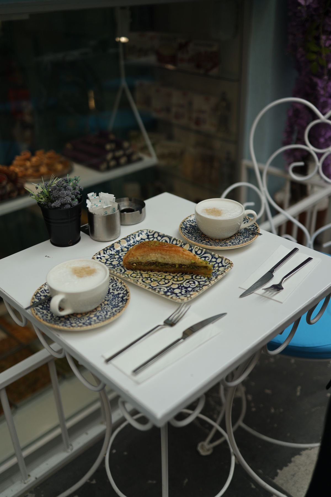
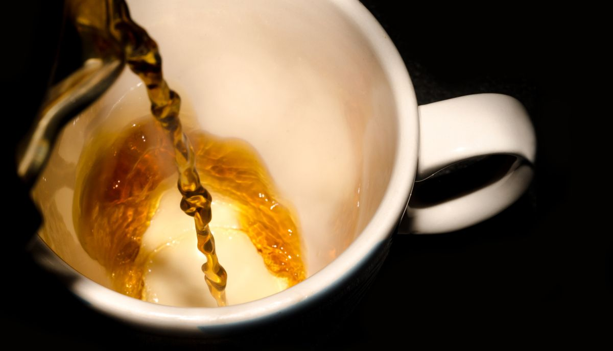
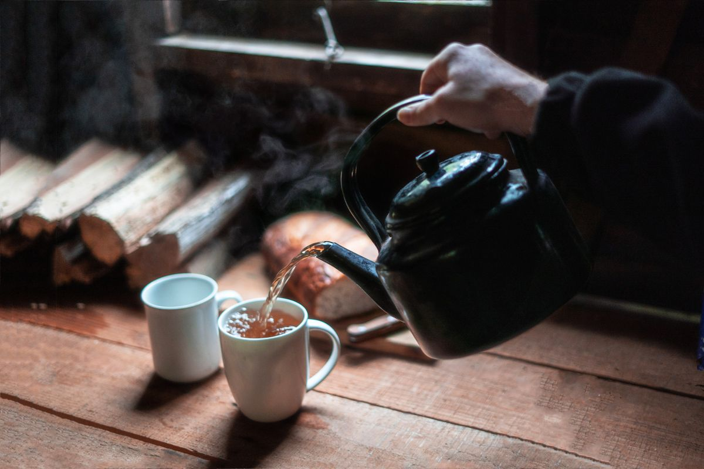
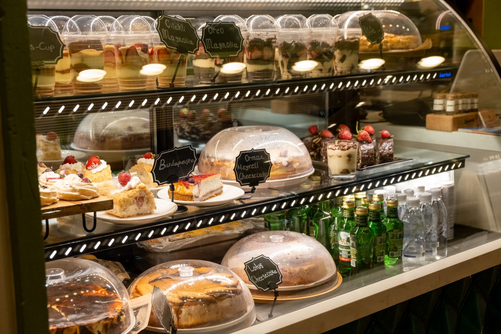

قهوه تخصصی
قهوه تخصصی نولان با دمآوری درست؛ همان چیزی که یک کافه خوب را تعریف میکند.
کافه نولان در خیابان والینژاد ونک نشسته است — قهوه تخصصی و کیک تازه در فضایی آرام؛ جایی برای حضور در لحظه، کار با لپتاپ و یک گفتوگوی بیعجله. میزتان را همین حالا آنلاین رزرو کنید.

در نولان، قهوه و کیک تازه قلب منو است — در کنار فضایی آرام که مشتریانش برای کار با لپتاپ و دورهمیهای بیعجله انتخابش میکنند.
قهوه تخصصی نولان با دمآوری درست؛ همان چیزی که یک کافه خوب را تعریف میکند.

کیک تازه در کنار قهوه؛ همراهی ساده و همیشگی برای یک استراحت کوتاه در ونک.

به گفته مشتریان، نولان فضایی آرام و مناسب کار با لپتاپ است؛ برای ساعتهایی تمرکز، دور از شلوغی.

فضای دنج نولان برای حضور در لحظه ساخته شده؛ بنشینید، قهوهتان را جرعهجرعه بنوشید و عجله نکنید.

کافه نولان در خیابان والینژاد ونک، با امتیاز ۴٫۶ از ۵ بر اساس ۱۲۹ نظر، یکی از کافههای محبوب این محله است؛ جایی که مشتریانش برای قهوه خوب و فضای آرامش برمیگردند.
قهوه تخصصی و کیک تازه، دو ستون منوی نولاناند؛ ساده، تازه و هر روز.
مشتریان نولان در نظرهایشان از فضای آرام کافه برای کار با لپتاپ گفتهاند.
خیابان والینژاد ونک؛ دسترسی آسان در منطقه ۳ تهران.
صفحه اینستاگرام ما @nolancafe با ۱۵٬۷۹۸ دنبالکننده، فضای کافه و تازهها را بهروز منتشر میکند.
قهوهای تازه، کیکی شیرین و میزی که عجلهای برای خالیشدنش نیست.






در فرم رزرو، روز و ساعت، تعداد نفرات و فضای موردنظرتان را مشخص کنید.
برای تأیید روز و ساعت رزرو، با شمارهای که ثبت کردهاید تماس میگیریم.
به خیابان والینژاد ونک بیایید؛ میزتان آماده است.
تهران، منطقه ۳، ونک، خیابان والینژاد.
قهوه تخصصی و کیک تازه؛ منوی کافه برای یک استراحت کوتاه یا چند ساعت کار آرام.
بله؛ مشتریان در نظرهایشان فضای آرام نولان را برای کار با لپتاپ مناسب دانستهاند.
۴٫۶ از ۵ بر اساس ۱۲۹ نظر.
فرم رزرو همین صفحه را پر کنید یا با شماره ۰۹۹۲۶۱۹۳۳۶۷ تماس بگیرید.
فرم را پر کنید؛ برای تأیید روز و ساعت رزرو با شما تماس میگیریم. اگر ترجیح میدهید مستقیم صحبت کنیم، تماس بگیرید:
۰۹۹۲ ۶۱۹ ۳۳۶۷ اینستاگرام: @nolancafe